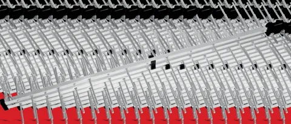

Fabricante · Blumenau/SC · 40 anos
Materiais elétricos e iluminação feitos há 40 anos em Santa Catarina
Luminárias, plafons, refletores, relés, eletroboias, caixas de inspeção, passa-fio, antenas e mais — para lojistas, distribuidores e para a sua casa.

Para quem é
Um fabricante, três formas de comprar
Lojistas e distribuidores
Catálogo completo com códigos e embalagens, representantes em Santa Catarina e atendimento direto do comercial para pedidos e reposição.
Falar com o comercialEletricistas e consumidores
Encontre o produto certo pelo código ou pelo uso, veja as especificações e descubra onde comprar perto de você.
Onde comprarRepresentantes comerciais
Buscamos representantes engajados no sul, norte e litoral de Santa Catarina. Produtos de qualidade, bem aceitos no mercado há 40 anos.
Seja um representanteLinhas de produto
Catálogo completo
O que a Homelux fabrica



Desde Blumenau para todo o Brasil
Indústria com 40 anos de chão de fábrica
40anos fabricando em Santa Catarina
5linhas de produto
150+códigos no catálogo 2025
SC · RSe todo o Brasil pelos representantes
Nossa missão: produzir sem poluir, com qualidade, buscando inovações, gerando sempre a expectativa de economia, conforto e bem-estar coletivo.
Precisa de orçamento ou do catálogo em PDF?
Atendimento comercial pelo WhatsApp, em horário comercial.